X 射线衍射物相分析 · 结构精修 · 多引擎集成
版本 v2.7.0 ｜ 2026 年 10 月
完整工作流：数据加载 → 预处理 → 峰检测 → 物相检索 → Rietveld 精修 → 报告
—— 内部配套文档 ——
PolyXRD 是一款 Windows 桌面 多晶 X 射线衍射（XRD）数据分析软件，目标是把"原始谱图 → 物相鉴定 → 结构精修 → 定量报告"的整条工作流集成在一个统一的中文/英文/日文三语言界面里，覆盖常规实验室的绝大多数分析需求。
PolyXRD 不是某一个专业软件的替代品，而是"工作流整合器"：内部提供内置引擎做快速分析，同时可与 FullProf、GSAS-II、MAUD 等外部专业程序联动，把它们的强项纳入同一条流水线。
| 模块 | 能力 |
|---|---|
| 数据处理 | 多格式加载（.xy/.xye/.txt/.csv/.dat/.mdi/.raw/.xrdml/.brml 等）、扣背景（SNIP/线性/多项式）、平滑（Savitzky-Golay）、Kα2 剥离、归一化、角度裁剪、8 种格式互转 |
| 峰检测 | 自动寻峰（含肩峰识别、亚像素细化）、峰位/强度/半高宽输出、Kα2 自动检测 |
| 物相检索 | 多库检索匹配（内置矿物库 / COD 无机物 / COD 全库 / 用户自建库 / PDF2-2004）、四态元素过滤、FoM 打分排序、最小关联峰惩罚（B-7）、Profile Fitting 全谱匹配、残差峰搜索 |
| 结构精修 | 内置快速拟合 + GSAS-II / MAUD / PowerXRD / auto 四引擎桥接、快速/分步双向导、外部 FullProf 批处理、Le Bail 晶胞精修、内标法定量 |
| 报告 / 项目 | Rietveld 报告预览与导出（json/txt/csv/all）、项目保存/恢复、窗口布局记忆 |
services/ 层是纯算法、不依赖 Qt，可独立测试与复现。与 JADE、FullProf Suite、MAUD、GSAS-II 等专业软件可互相配合使用——PolyXRD 负责把它们串成一条流畅的流水线。
| 形态 | 适用人群 | 说明 |
|---|---|---|
| 安装包 Setup (.exe) | 普通用户（推荐） | 双击安装到本机，开始菜单生成快捷方式 |
| 便携版 Portable (.zip) | 免安装 / U 盘 | 解压即用，目录内含启动器与安全模式脚本 |
| 单文件 exe | 快速分发 | 拷贝到任意 Windows x64 机器直接运行 |
双击 PolyXRD-Setup-v2.7.0.exe 启动安装向导。向导提供 简体中文 / 繁體中文 / English / 日本語 四种语言，系统语言为中文时自动选中中文。
安装流程：选择语言 → 选择安装位置（可选「为所有用户安装」）→ 选择附加任务（桌面图标）→ 安装 → 完成。
安装位置建议：默认安装到当前用户目录（
%LOCALAPPDATA%\Programs\PolyXRD），无需管理员权限。若要装到C:\Program Files\...等受保护目录，请在向导的「为所有用户安装」处勾选管理员安装。安装耗时：安装包约 250 MB，解压后约 1.1 GB、上万个文件。「正在解压文件」阶段进度条推进较慢，实测约 4～5 分钟（机械硬盘更久），属正常现象，勿中途关闭。
安装异常排查：安装程序会自动写日志到
%TEMP%\Setup Log <日期> #NNN.txt。若安装失败，请提供该日志末尾数十行；若该目录下根本没有当天日志，通常说明安装程序被杀软/安全策略拦截。
⚠️ 最重要的一条：必须先「完整解压」，再运行。 不要在压缩包内直接双击
PolyXRD.exe——Windows 会把文件解到临时只读目录，Qt 插件加载失败，典型表现是「窗口一闪就退出」。请右键压缩包 →「全部解压缩」，解到普通可写目录后再运行。
解压后的关键文件：
| 文件 / 目录 | 作用 |
|---|---|
PolyXRD.exe |
主程序 |
启动 PolyXRD.bat |
推荐入口：先设置 UTF-8 编码环境再启动；异常退出时保留窗口显示退出码 |
安全模式启动.bat |
强制软件渲染（软件 OpenGL）启动，规避显卡驱动崩溃 |
_internal\ |
运行时依赖库（请勿删除或改名） |
启动自愈机制：部分 Windows 11 / 显卡驱动组合下，主窗口在显示瞬间会触发 Qt 原生崩溃。软件采用跨启动自愈：若上一次启动未能存活，本次自动切换到软件渲染（日志里出现 auto safe-render）。若仍异常，请直接使用 安全模式启动.bat。
PolyXRD.exe --diagnose：打印运行环境与依赖信息PolyXRD.exe --safe-render：本次强制软件渲染（不改动持久状态）PolyXRD.exe --reset-render：清除自愈状态，回到硬件渲染%USERPROFILE%\.polyxrd\logs\startup-<日期>.log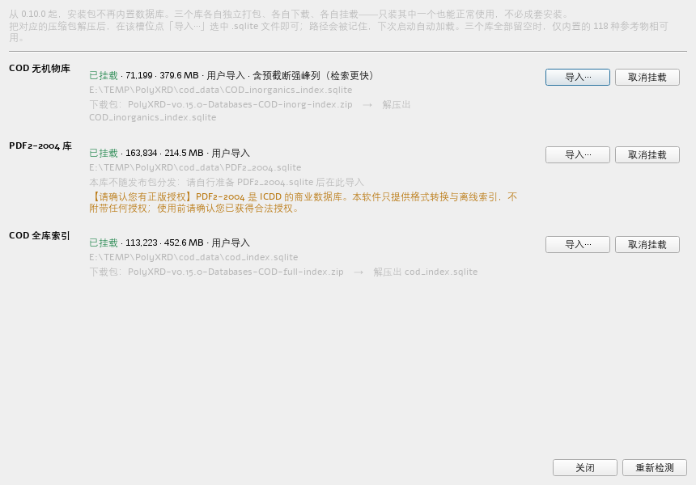
主程序不内置大型衍射数据库——四个库各自独立打包、各自下载、各自挂载，只装其中一个也能正常使用。
挂载步骤：
1. 点击工具栏「数据库」图标打开数据库管理器
2. 对需要的库点「导入…」，选择对应的 .sqlite 文件
3. 显示「已挂载」即成功，路径会被记住，下次启动自动加载
| 数据源 | 规模 | 适用场景 |
|---|---|---|
| builtin 内置库 | 118 种常见矿物/物相 | 快速演示、教学、无数据库时 |
| cod_inorganics | 71,199 无机物相 | 日常推荐（瘦身索引式，d-I 预计算 + Hanawalt 预筛，速度最快） |
| cod_full | 113,223 条 CIF | 需要覆盖全化合物空间 |
| user 用户自建库 | 用户自定 | 导入自己收集的 CIF / 私有物相，与 COD 同构、可检索可精修 |
| pdf2 | 163,834 物相 | 有 ICDD 正版授权时（卡片信息最全） |
⚠️ PDF2-2004 数据库为 ICDD 版权数据，请确认已获得正版授权后再挂载使用。
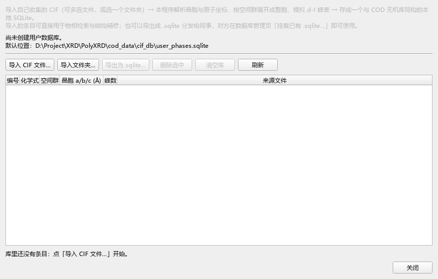
除官方分发的大型库外，PolyXRD 支持把你自己收集的 CIF 或私有物相建成一个与 COD 无机物库同构的本地库，挂载后即可像官方库一样检索与精修。
构建方式：使用工具把 CIF 批量灌入一个 SQLite（与 COD 无机物库 schema 一致，含 d-I 峰表预计算）。
挂载与管理：
1. 数据库管理器新增「用户库」槽位，导入该 .sqlite 即出现在物相源下拉的 第 6 项 user。
2. 物相检索时可在源选择里勾选 user，与 builtin / COD 等并列参与检索。
3. 用户库条目与官方库条目共用同一套检索/打分/精修链路，无需任何额外适配。
用户库的引用以
Phase.db_id字段回溯，展示名中的数字（如USER-000001）不是 COD ID，请勿当作 COD 编号处理。
界面默认中文，可在状态栏右下角切换语言（中文 / English / 日本語），切换立即生效。
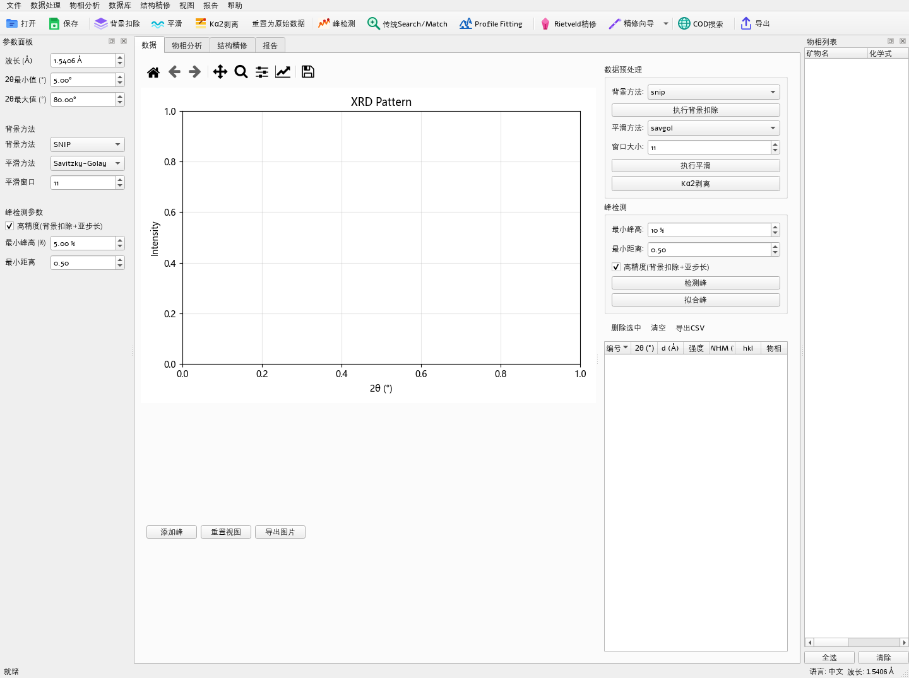
主窗口布局：顶部工具栏 + 四标签页 + 左侧参数面板 + 右侧停靠窗口。
| 区域 | 内容 |
|---|---|
| 顶部工具栏 | 打开/保存、扣背景、平滑、剥 Kα2、峰检测、传统 Search/Match、Profile Fitting、Rietveld 精修、精修向导、COD 检索、导出、数据库管理 |
| 左侧「参数面板」 | 当前标签页的参数（波长、背景方法、峰检测阈值等） |
| 标签页 × 4 | 数据 / 物相分析 / 结构精修 / 报告 |
| 右侧停靠窗口 | 物相列表（矿物名/化学式两个页签，勾选集驱动精修页） |
| 状态栏 | 精修状态、最佳匹配物相、语言与波长信息 |
数据页谱图主导布局（v2.6.0）：数据页改为「谱图为主」的三向分隔布局——中央大谱图 + 可收起的预处理/峰检测参数面板 + 峰表。面板收起钮可把空间让给谱图，峰表与谱图联动高亮。
谱图交互：
- 滚轮缩放：以光标为中心缩放
- 左键拖拽：平移谱图
- 单击峰位：弹出峰信息
- 工具栏 Home 键：一键复位到数据全览
- 右键谱图：可调整 Y 轴缩放模式、显示峰标记等
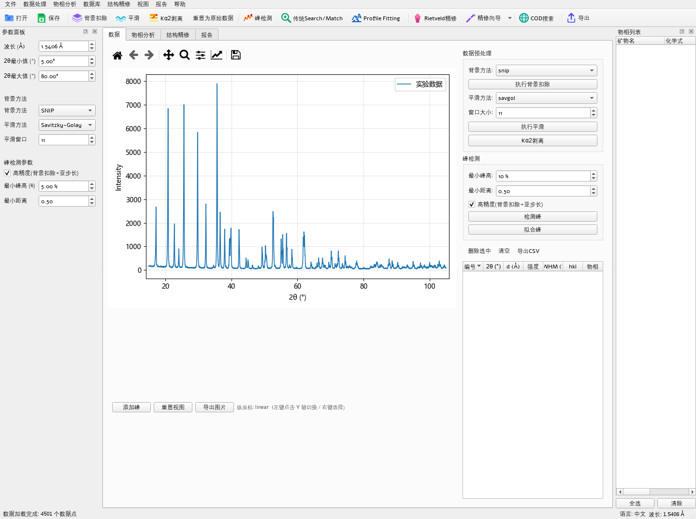
点击工具栏「打开」或菜单 文件 → 打开数据，选择谱图文件。
| 格式 | 说明 |
|---|---|
.xy / .xye / .txt / .csv / .dat |
两列/三列文本（2θ-强度 或 2θ-强度-误差），自由分隔符，自动跳过 # / ! 注释行 |
.mdi / .raw |
MDI Jade / 常见仪器原始格式 |
.xrdml / .brml / .xml |
XML 标准格式 / Bruker 原始格式 |
.json |
结构化谱图数据 |
若加载后衍射峰位置整体偏移，请检查「波长」参数（默认 Cu Kα1 1.5406 Å）是否与实验条件一致；修改后重新加载。
| 步骤 | 入口 | 作用与原理 |
|---|---|---|
| ① 扣背景 | 工具栏「扣背景」/ 左侧面板选方法 | 去除空气散射、荧光、样品台散射等缓变背景。SNIP 算法对晶面密集、背景起伏复杂的谱最稳健；线性/多项式适合背景平缓的谱 |
| ② 平滑 | 左侧面板「平滑方法」 | Savitzky-Golay 卷积在去噪的同时保留峰形（窗口宽度 11 点为常用起点；窗口过大会压低峰高） |
| ③ 剥 Kα2 | 工具栏「剥 Kα2」 | Cu 靶 Kα1/Kα2 双线使每条衍射峰成对出现。Rachinger 法按强度比 Kα2/Kα1≈0.5 逐点剥除 Kα2 贡献 |
| ④ 归一化 / 裁剪 | 左侧面板 | 强度归一到 0-100 或最大值 100；裁掉仪器盲区（如 <15° 或 >100° 低信噪比区段） |
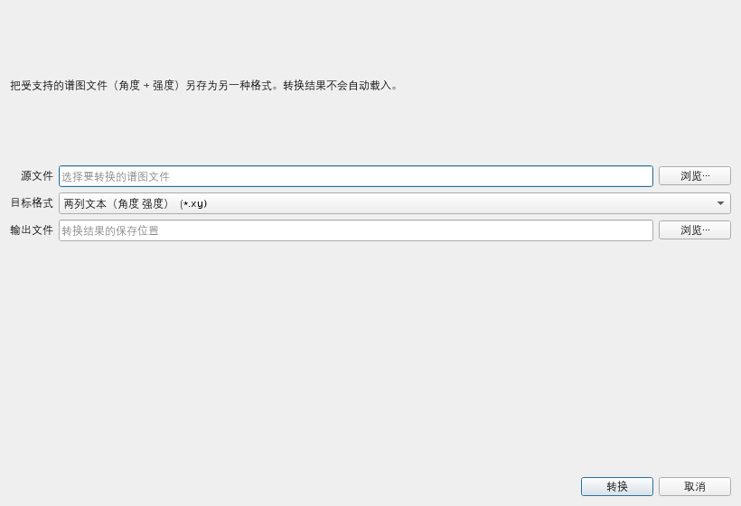
xy / txt / dat / csv / mdi / raw / xrdml / json 共 8 种格式之间互转，便于与其它软件交换数据。SNIP 背景算法：对谱反复做"局部最小 → 裁剪"的尺度递归，把快变峰"削"掉只留慢变背景。适合荧光/陡变背景。注意：SNIP 对噪声敏感，建议先平滑再扣背景。
Savitzky-Golay 平滑：用多项式对局部窗口做最小二乘拟合，在去噪的同时较好地保留峰高与峰形。窗口宽度的选择：
- 窗口过小：降噪不充分
- 窗口过大：压低峰高、拉宽峰形
- 经验：窗口宽度 ≈ 平均 FWHM 的 1.5~2 倍
Kα2 剥离的时机：
- 必须在峰检测和精修之前完成
- 若数据已在仪器端剥离过 Kα2，不要再剥第二次（会引入畸变）
- 软件会自动检测数据中是否存在未剥离的 Kα2，命中则在结果提示条给出警告
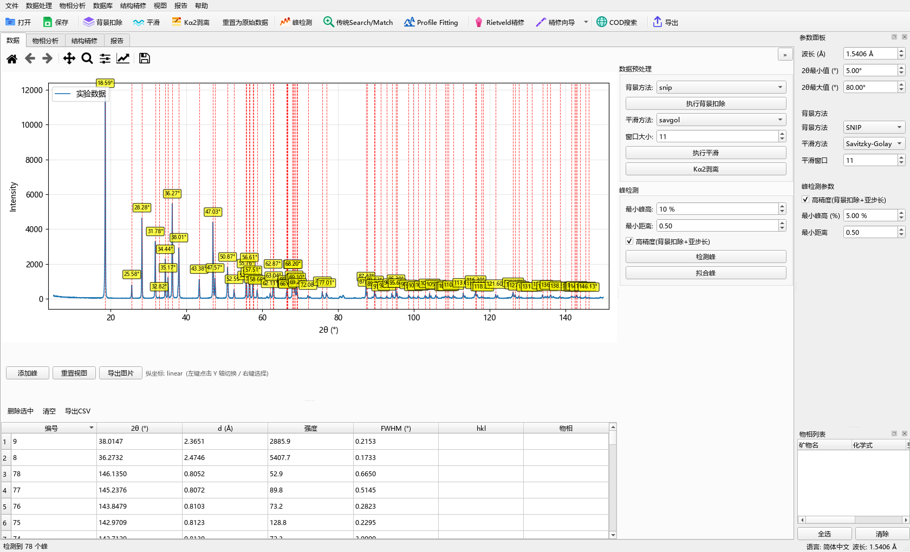
切到「物相分析」标签，点击工具栏「峰检测」（或左侧面板调阈值后自动运行）。
面板上可调的项只有三个，其余为内部参数：
| 面板项 | 默认值 | 说明 |
|---|---|---|
| 最小峰高 (%) | 5 | 峰高相对于最强峰的最小百分比 |
| 最小距离 | 0.5° | 两峰之间的最小 2θ 间距（防重复检测）。XRD 峰半高宽通常 0.05~0.5°，建议设 0.2~1.0；设得过大（如 5°）会丢弃间距近的强线，例如 ZnO 的 31.8°/34.4°/36.3° 只剩 36.3°，显著损害物相识别召回 |
| 高精度(背景扣除+亚步长) | 关 | 勾选后自动背景扣除 + 亚步长峰位精修 + 重叠峰联合拟合，峰位精度可达 ~0.001°，弱峰更易检出；不勾选则用传统高度阈值法 |
面板按钮：「检测峰」 执行常规检测，「拟合峰」 对已检出的峰做局部拟合精修峰位。
检出判据本身是「峰高须 > 3 × 局部噪声 σ」（内部参数，界面不暴露），因此弱峰的检出主要靠降低「最小峰高」或开启「高精度」，而非调整突出度。
峰检测分两步：
勾选「高精度」时，会先自动扣除背景再走上述流程，并对重叠峰做联合拟合，因此肩峰分离与峰位精度显著提升。
峰太多（噪声被误检）→ 提高最小高度/突出度，或先平滑再检测
峰太少（弱峰漏检）→ 降低阈值，或提高灵敏度；必要时手动添加峰
肩峰未分离→ 开启「高精度模式」，或减小最小峰间距
峰检测是检索匹配的输入：峰位不准会直接拉低匹配度。务必在检索前肉眼复核峰标记是否合理
| 模式 | 入口 | 原理 | 适用场景 |
|---|---|---|---|
| 传统 Search/Match | 工具栏「传统 Search/Match」 | 基于检出的峰位/强度列表与数据库标准卡片做 FoM 打分匹配 | 常规检索，速度快 |
| Profile Fitting | 工具栏「Profile Fitting」 | 不依赖寻峰，直接用全谱与候选相合成谱做形态拟合（PFSM） | 峰严重重叠、弱峰多的样品 |
FoM（Figure of Merit）是检索匹配的核心评分，越低越好。它综合考量：
FoM = w₁·(峰位漏检率) + w₂·(强度不一致) + w₃·(强峰命中率惩罚) + 特异性项
置信度：FoM 自动转换为置信度等级（优秀 / 良好 / 一般 / 较差），显示在结果列表中。
v2.7.0 对 FoM 的内部计算做了显式解耦，把"位置偏差"与"漏检惩罚"拆成两条独立加权项，并新增可观测字段：
bad = bad_pos + _FOM_MISS_WEIGHT · bad_miss
bad_pos = Σ(权重·位置偏差) / Σ权重 # 已匹配峰的位置偏离
bad_miss = Σ(权重·漏检) / Σ权重(可见参考峰) # 未被解释的参考峰
_FOM_MISS_WEIGHT（默认 1.0）：漏检项的独立权重。默认 1.0 在数值上完全等价于 v2.6.0 的旧行为（零回退），把它单独提出来是为了让"漏检惩罚强度"成为可独立调节的旋钮，而不再和位置偏差耦合。_FOM_SPEC_WEIGHT 0.30 → 0.50：特异性项（真实物相的谱形自洽度）权重上调，是 v2.7.0 唯一带来净正收益的改动——B 级 top10 由 44/49（90%）提升到 45/49（92%），A 级与组合指标零回退；0.55 起组合指标反而退化，故 0.50 为最优点。FoMResult 新增字段：position_dev（位置偏差分量）、miss_penalty（漏检惩罚分量）、spec_penalty（特异性惩罚分量），便于逐候选诊断 FoM 拆解。诊断工具：随仓库
scripts/diag_recall_breakdown.py可输出每个候选的bad / unexp / ic / matched / missed / s*逐项分解，配合scripts/bench_fom_ablation.py消融仪可在 13 试样上快速验证任何 FoM 参数改动。
窄 2θ 窗口内只有 1 条参考峰能对上实测峰时，偶然匹配概率高 → 假阳性。v2.5 对匹配峰数 < 2 的候选施加 FoM ×2 惩罚（而非直接淘汰，避免误杀高对称少峰相如 Zircon）。
这是 v2.5 全部收益的来源：组合相级 +3、试样级 +2、检索 B 级 top10 +2。
对每条候选在小网格上扫描 2θ 零点偏移，取最优 FoM。借鉴成熟商用软件的 Automatic zero point adaptation。
两道护栏：
- 幅度限制：|dz| ≤ 0.15°（超过 = 数据质量问题而非零点问题）
- 改善阈值：dz≠0 的 FoM 须比 dz=0 好 > 10% 才采用（避免虚假优化挤掉真相）
⚠️ 13 试样消融实测为净负（A 级 MISS 0→1、MRR 下降），与 B-3 同款处置——默认关闭。参数
fom_zero_grid保留，供零点漂移明显的谱按需开启（如(-0.10, -0.05, 0.0, 0.05, 0.10)）。
FoM 基于峰位匹配，对密集峰表相容易因弱线漏检把真相压到后面。PFSM（Peak Fitting Search/Match）直接比实测谱 vs 单相合成谱的形态，不依赖峰位一一匹配。
v2.5 改用 ΔRwp（Rwp 下降量） 作为重排指标（替代旧的相关性系数），并加双过滤：
- delta_rwp < 0.5% 的候选视为伪阳性，不进重排
- scale < 0.02 的候选视为微量/噪声，不进重排
默认关闭（13 试样实测会使 B 级 MISS 2→3），基础设施保留。PFSM 只适合做复核，不适合参与默认排序。
层状/链状硅酸盐（Muscovite、Hornblende 等）在压片制样时晶面强烈择优取向，实测强度与运动学计算强度系统性偏离。B-4 对参考峰密集（≥80 线）的候选做 March-Dollase r 网格搜索（织构轴 [001]），选最优 r 的 FoM。
两道护栏：
- _FOM_PO_MIN_REFS = 80：只对极密集峰表候选做 PO（避免中等密度相被误优化）
- _FOM_PO_IMPROVE_FRAC = 0.10：r≠1.0 的 FoM 须比 r=1.0 好 > 10% 才采用
若已知样品含有的元素（如 EDS 结果），使用元素过滤可大幅压缩候选空间、提升命中率。过滤支持四态：
| 类别 | 判定式 | 含义 |
|---|---|---|
| 必有 (must_have) | P ⊆ S | 每个必有元素都必须出现（AND，全部必含） |
| 含有 (has) | S ∩ H ≠ ∅ | 物相至少含其中一个元素 |
| 可能 (maybe) | 无强制条件 | 仅放宽允许池；H 为空时「可能」代行 H 之职 |
| 没有 (exclude) | S ∩ E = ∅ | 含任一"没有"元素即淘汰 |
闭环规则：当「必有 ∪ 含有 ∪ 可能」非空时，未勾选的元素一律视为「没有」（等价于 S ⊆ P∪H∪M）。三者全空时不启用闭环 = 全库搜索；只勾「没有」时也是开放世界，仅排除这些元素。
重叠优先级：必有 > 含有 > 可能 > 没有。
示例：已知样品含 Si、O、Al、Fe，勾必有 Si、O，含有 Al、Fe → 候选必须同时含 Si 和 O，且至少含 Al 或 Fe 中的一个，且不含其他未勾元素。
迭代式物相分析：先确认主相，再对未解释的峰追查残余微量相。
操作：在物相分析页的候选列表上右键 →「仅对未解释峰再搜索…」。软件会：
1. 计算当前已选相对实测峰的覆盖情况
2. 提取未被任何已选相解释的"残差峰"
3. 仅对这些残差峰重新做一次检索
另一个入口：在峰归属表中选中若干行后，右键 →「仅对标记峰再匹配…」，只用你手动标记的峰重新检索。适合你已经从图上判断出某几个峰可疑、想定向追查的场景。
适用场景：多相样品中，主相确定后，剩余弱峰可能来自微量相——直接用全谱检索会被主相淹没，残差峰搜索可把微量相"挖"出来。
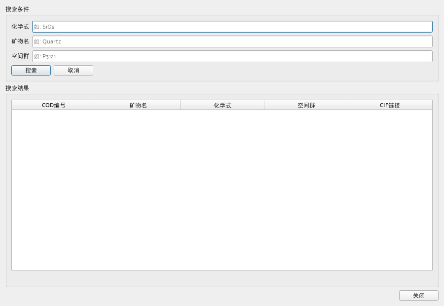
| 数据源 | 规模 | 速度 | 适用场景 |
|---|---|---|---|
| builtin | 118 相 | 极快 | 演示、教学 |
| cod_inorganics | 71,199 相 | 最快 | 日常推荐 |
| cod_full | 113,223 相 | 中 | 全化合物空间 |
| user | 用户自定 | 中 | 私有物相、自己收集的 CIF |
| merged | 内置 + COD 全库 | 中 | 高召回 |
| pdf2 | 163,834 相 | 中 | 有正版授权时 |
COD 在线检索：本地库无果时，点工具栏「COD 检索」按化学式 / 矿物名 / 空间群联网查询 COD 开放晶体库，结果可直接取用 CIF。
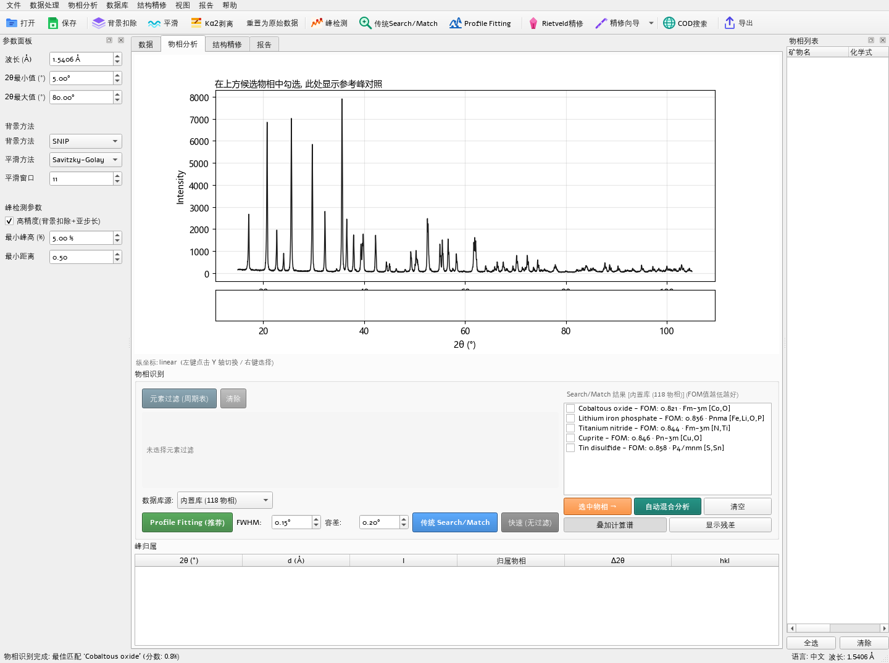
结果列表按 FoM 升序排列（越低越好），包含：
- 匹配度 / 置信度
- 物相名称 / 化学式 / 空间群
- 匹配峰数 / 总峰数
- 晶胞参数（若数据库提供）
状态栏给出最佳匹配物相。建议结合峰位标记（谱图上会叠加候选峰位）肉眼复核。
在候选列表勾选可信物相（可多选）。勾选集会实时同步到：
1. 主窗口右侧「物相列表」停靠窗
2. 精修页右栏「已选物相」列表
3. 项目文件（保存/恢复随项目走）
右键菜单：导出 CIF、查看详情、搜索未解释峰（残差峰搜索）。
CIF 导出优先从本地 COD 目录读取全文，缺失时自动回退 COD 在线接口——导出的 CIF 可直接作为精修初始模型。
软件提供 build_refinement_combination 自动从候选中选出最优物相组合用于精修，基于以下策略：
分支定界（B&B）全局搜索：
- 每个候选映射为"命中实测峰的掩码"
- 以子集联合覆盖最多实测峰为目标做全局搜索
- expected_count 已知 → 恰好该规模、联合覆盖最优的子集
- expected_count 未知 → 取覆盖不再增长的最小规模（简约原则）
质量增强项：
- 自解释率缩放（S14b）：每个候选相计算强度加权自解释率 r，覆盖向量乘 r^β。真实相强线大多命中 → r≈0.8-1 几乎无影响；覆盖毯相强线未命中 → r≈0.05，贡献塌缩。这是防止"密集弱线相靠运气线蹭高分"的关键机制。
- FoM 质量缩放（E1）：cover_vector 按 FoM 质量缩放，让少峰但 FoM 优的相不被多峰相稀释。
- 池保底回收（E2）：matched_peaks ≥ 2 的候选即使 FoM 排名在 pool_top_n 之外也强制进入 B&B 池。
- 纯金属约束：子集内纯金属数 ≤ max(1, round(0.2·n))。
说明：E1/E2 经 13 试样消融验证为中性基础设施（开启/关闭结果不变），保留作为可调参数。组合结果的真实改善来自 B-7 最小关联峰惩罚（让弱线真相在检索阶段不被挤出候选池），组合相级从 42/49 提升到 45/49、试样级从 8/13 提升到 10/13。
实际应用中，引入元素约束后组合质量会显著提升：
- 检索阶段，化学上不合理的候选（如不含已知元素的相）被直接过滤
- 组合阶段，"覆盖毯相"（如 Anhydrite 含 Ca/S/O，若样品不含 Ca 则被排除）不再挤占组合位
- 弱线真相（如 Muscovite 含 K/Al/Si/O）得以入选
因此，有元素信息时务必使用元素过滤——这是提升组合准确率最有效的手段。
Rietveld 法不用单个峰的积分强度，而是用结构模型逐点计算整张衍射谱并与实测谱做最小二乘拟合：
y_calc(2θ) = y_bg(2θ) + Σ_相 S_相 · Σ_hkl I_hkl · φ(2θ − 2θ_hkl)
I_hkl ∝ |F_hkl|² · m_hkl · LP(θ) · e^(−B·sin²θ/λ²)
目标：min Σ w_i(y_obs,i − y_calc,i)², w_i = 1/σ²(y_i)
可精修的量：标度因子（→物相含量）、晶胞参数（→峰位）、峰形（Caglioti U/V/W、η）、零点偏移、背景多项式，以及原子坐标与占位。
拟合质量指标：
R_wp = √( Σ w_i(y_obs,i − y_calc,i)² / Σ w_i·y²_obs,i )
GOF (S) = R_wp / R_exp
合格参考：常规实验室数据 R_wp < 15%、GOF ≈ 1~3 视为良好。
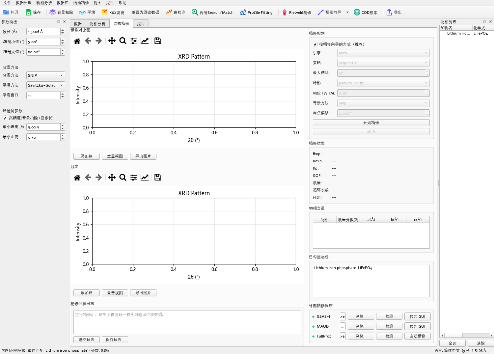
操作顺序：
1. 确认「已选物相」列表非空（来自物相分析页勾选）
2. 右栏「精修控制」选引擎 / 策略 / 循环数 / 峰形 / 背景
3. 点「开始精修」
精修完成后查看：模拟谱叠加、残差图、Rwp/GOF、物相质量分数与晶胞参数、底部日志。
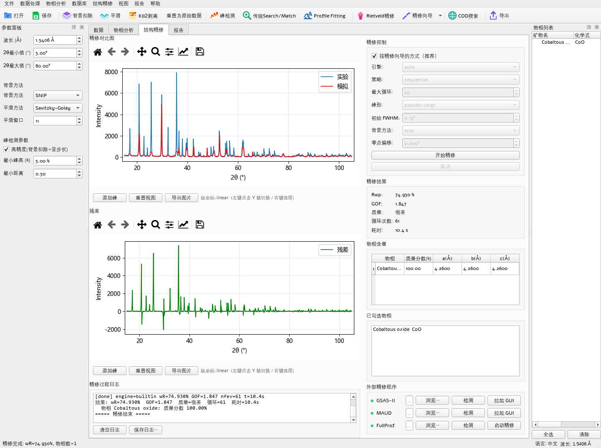
| 引擎 | 性质 | 说明 |
|---|---|---|
| auto（推荐） | 自动选择 | 按本机安装情况在 gsas2/maud/builtin 间自动择优 |
| builtin | 内置快速拟合 | 零依赖、秒级完成；快速验证物相组合。注意：不是完整 Rietveld，不计算结构因子，R_wp 偏高属预期 |
| gsas2 | GSAS-II 桥接 | 调用本机 GSAS-II 安装（scriptable 桥），出标准 Rietveld 结果与 wt% |
| maud | MAUD 批处理 | 调用本机 MAUD（生成 .par + .xye，批处理跑完回读） |
| powerxrd | PowerXRD | 轻量开源引擎备选 |
引擎回退可见：当请求的引擎不可用而实际回退到别的引擎时，结果区会给出提示条并写入执行日志。
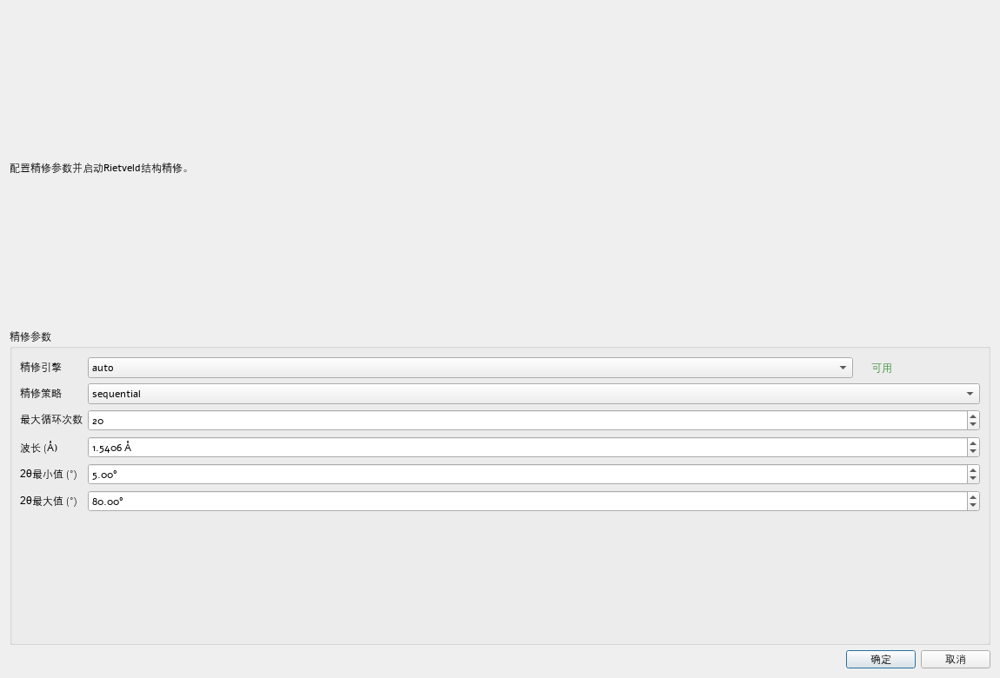
与精修页快速精修互为独立路径、结果互不覆盖：
① 快速向导（单页）：一个对话框内配好引擎 / 策略 / 循环数 / 波长 / 2θ 范围，点「确定」即按当前物相勾选集启动精修——适合常规单相、少量多相样品。
② 分步精修向导（五步）：选择数据 → 选择物相 → 配置参数 → 预览 → 执行，比快速版多了模板参数管理、CIF 导入与 COD 检索——适合新手或复杂多相体系。
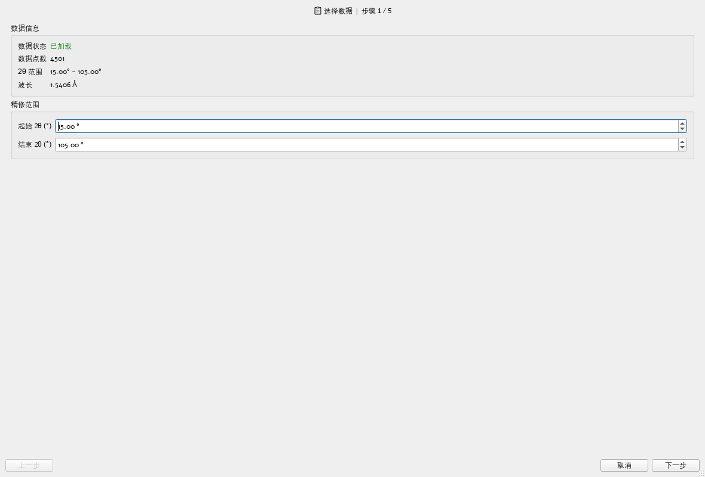
| 指标 | 含义 |
|---|---|
| wR（加权 R_wp） | 加权轮廓 R，默认使用 Poisson 统计权重 |
| R_exp | 期望 R，权重正确后才可解读（标准定义 w = 1/σ²） |
| GOF (S) | R_wp/R_exp，理想值接近 1 |
| R_p | 轮廓 R（Σ|Δy|/Σy） |
质量分级（实验室粉末 XRD 口径）：< 5 优秀 / < 10 良好 / < 15 一般 / < 25 差 / ≥ 25 需改进。
⚠️ 口径铁律：默认 Poisson 统计权重后，加权 wR 与旧版「单位权 wR」不可直接比较。跨版本/跨软件比较 wR 时务必声明口径。
| 项 | 说明 |
|---|---|
| 峰形面积归一 | 峰形函数改为面积归一（∫PV = 1），峰宽参数才具备可解释性 |
| 背景进入拟合 | 背景不再「开头估一次即冻结」，默认对背景做 Chebyshev 多项式抛光（6 阶），仅在更优时采纳 |
| 样品位移 | 可精修样品位移（Δ2θ = −2s·cosθ），修正由样品偏心引起的峰位系统偏移 |
| 低角不对称（可选） | split pseudo-Voigt，用于低角区轴向发散导致的峰形不对称 |
| 全晶胞参数模式（可选） | 由 a/b/c/α/β/γ 直接精修峰位 |
| Kα2 双线检测 | 自动判断数据中是否存在未剥离的 Kα2，命中则警告先剥 Kα2 再精修 |
分步放开参数比一次全放开稳健：
1. 第一轮：只精修标度因子 + 背景
2. 第二轮：加入晶胞参数
3. 第三轮：加入峰形参数（U/V/W/η）
4. 第四轮：加入原子坐标/占位/温度因子
收敛困难排查：
- 物相初始晶胞错误 → 换一张卡片或导入正确 CIF
- 标度因子量级差太多 → FullProf 路径已自动校准
- 背景方法不当 → 改用 SNIP
- 数据噪声过大 → 先平滑 + 扣背景
- 数据中 Kα2 未剥离 → 注意 Kα2 警告
精修页右栏底部为三行外部程序面板（状态灯 / 路径 / 浏览 / 检测 / 启动）：
| 程序 | 启动方式 | 说明 |
|---|---|---|
| FullProf | 批处理精修（一键） | 自动生成 .dat/.pcr → 调用 fp2k 精修 → 自动回读 Rwp/Rexp/Rp/GoF 与各相 R_Bragg/晶胞/含量到日志区；内置标度自动校准与保守模式兜底 |
| GSAS-II | 拉起 GUI | 导出 .xy 与物相 CIF 到工作目录后启动 GSAS-II 主界面 |
| MAUD | 拉起 GUI | 导出 .xye 与 CIF 后启动 MAUD 图形界面 |
外部程序工作目录固定为
~/.polyxrd/external_runs/<时间戳>/（全 ASCII，规避权限与编码问题）；路径未配置时点「检测」可自动探测本机安装。
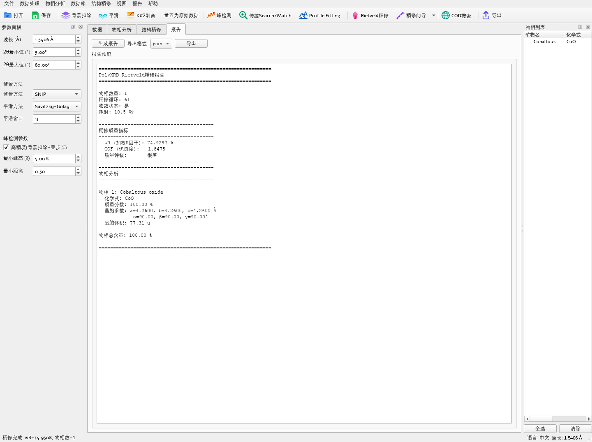
「报告」标签实时生成精修报告预览：
- 精修质量指标（wR/GOF/质量等级）
- 物相列表（化学式 / 质量分数 / 晶胞 / 晶胞体积 / 物相总含量）
- 可导出 json（机器可读）、txt、csv（表格数据），或选择 all 一次导出全部
导出为文本/表格格式（便于 Excel、Python、R 作图脚本继续处理）。需要排版好的 PDF 报告时，请用「打印」功能（Ctrl+P）另存为 PDF。
菜单 文件 → 保存项目 / 打开项目。项目文件（.polyxrd JSON）记录：
- 数据文件路径
- 处理参数（背景方法、平滑参数等）
- 峰列表
- 物相勾选集
- 精修结果与参数
换机或重开软件后可完整还原工作现场。
2d·sinθ = n·λ
晶面间距 d 的晶面族在入射角 θ 处产生相长干涉。测得一系列 2θ 峰位、已知波长 λ，即可反推各晶面的 d 值序列——这是物相"指纹"比对的物理基础。
各 (hkl) 衍射的积分强度由以下因子共同决定：
- 结构因子 |F_hkl|²：原子种类与坐标决定
- 多重性因子 m：等效晶面数
- 洛伦兹-偏振因子 LP(θ)：几何与偏振修正
- 温度因子 e^(−B·sin²θ/λ²)：热振动削弱高角强度
强度分布是第二重指纹，也是 Rietveld 定量相分析的依据。
传统流程 = Hanawalt（以最强 3 峰的 d 值组合查索引）+ Fink（8 强峰）+ 逐峰容差匹配与强度相关打分。
PolyXRD 对数据库预先计算 d-I 峰表并建立强峰索引，检索时先粗筛再精排（FoM），在十万级卡片上实现秒级响应。
SNIP 背景算法：对谱反复做「局部最小 → 裁剪」的尺度递归，把快变峰"削"掉只留慢变背景，适合荧光/陡变背景。
峰形：pseudo-Voigt（Gaussian 与 Lorentzian 线性组合，混合系数 η）描述，做面积归一；峰宽随角度的变化用 Caglioti 公式：
FWHM² = U·tan²θ + V·tanθ + W
层状/链状硅酸盐在压片制样时，晶片倾向于平行排列，导致某些晶面（通常 [00l]）的衍射强度系统性偏高/偏低。March-Dollase 模型用一个参数 r 描述取向程度：
- r = 1.0：无取向
- r < 1：[001] 平行晶面增强
- r > 1：[001] 垂直晶面增强
物相的质量分数可由精修得到的标度因子计算：
wt%_i = (S_i · Z_i · M_i · V_i) / Σ_j (S_j · Z_j · M_j · V_j)
其中 S = 标度因子，Z = 晶胞内化学式单元数，M = 摩尔质量，V = 晶胞体积。这是 Rietveld 法能同时定性 + 定量的核心。
正确顺序：加载 → 扣背景 → 平滑 → 剥 Kα2 → 归一化 → 裁剪
不要先平滑再扣背景：平滑会把峰的边缘"抹"到背景里，导致 SNIP 估高背景。
| 问题 | 对策 |
|---|---|
| 峰位整体偏移 | 检查波长参数；检查样品是否偏心（精修样品位移） |
| 背景很高且不平 | 改用 SNIP 扣背景；增大 SNIP 窗口 |
| 弱峰被噪声淹没 | 先平滑（SG 窗口 11-15）再检测；降低相对高度阈值 |
| 峰严重重叠 | 开启高精度峰检测；或用 Profile Fitting |
| 强度系统性偏差 | 考虑择优取向（层状硅酸盐）；换一张同物相的卡片 |
Q1：便携版双击后窗口一闪就退出？
按顺序排查：① 是否完整解压后运行（切勿在压缩包内直接运行——最常见原因）；② 改用 启动 PolyXRD.bat；③ 若仍异常，改用 安全模式启动.bat；④ 跨启动自愈通常会在第二次启动时自动切到软件渲染；⑤ 查看 %USERPROFILE%\.polyxrd\logs\startup-<日期>.log。
Q2：物相检索没有结果 / 结果很差？
按顺序检查：① 是否已挂载数据库（含用户自建库）；② 峰检测是否合理（过多/过少都会毁掉匹配）；③ 是否应开启元素过滤；④ 波长是否正确；⑤ 尝试换数据库（builtin → cod_inorganics → user → merged）。
Q3：builtin 精修 wR 很高？
builtin 是内置快速峰形拟合引擎，不计算结构因子，用于快速验证物相组合。定量结论请改用 gsas2 / maud / auto，或使用外部 FullProf 批处理精修。
Q4：wR 比上一版"变大"了？
v2.0.0 起默认启用 Poisson 统计权重，加权 wR 与旧版单位权口径不可直接比较。请以同一版本、同一口径下的前后对比为准。
Q5：外部程序状态灯是红色？
点该行「检测」自动探测；仍不行则「浏览…」手动指定（FullProf 选 fp2k.exe；GSAS-II 选其自带 python.exe；MAUD 选安装根目录或 jdk/bin/java.exe）。
Q6：精修不收敛 / 发散？
常见原因：物相初始晶胞错误（换卡片或导 CIF）；标度因子量级差太多；背景方法不当（改 SNIP）；数据噪声过大；Kα2 未剥离。分步放开参数比一次全放开稳健。
Q7：精修结果里物相含量加起来不是 100%？
先确认是否所有已识别晶相都加入了精修——若存在未纳入的非晶相或未识别晶相，总含量自然不足 100%，这属于正常现象。内置引擎给出的是相对含量（以已纳入相归一），如需绝对含量（如无定形分数），建议改用 GSAS-II / MAUD / FullProf 做定量精修。
Q8：元素过滤怎么设置？
在物相分析页左侧面板找到元素过滤区。四态含义：必有（全部必须含）、含有（至少含一个）、可能（允许出现）、没有（必须不含）。未勾选的元素在闭环规则下视为"没有"。
Q9：残差峰搜索怎么用？
先在候选列表勾选已确认的主相，然后右键 →「仅对未解释峰再搜索…」。软件会自动找出未被主相解释的峰并重新检索。若你在峰归属表里手动选中了若干可疑峰，则用「仅对标记峰再匹配…」只对这几行重新检索。
Q10：用户自建库怎么建？
把收集到的 CIF 用配套工具批量灌入一个与 COD 无机物库同构的 SQLite（含 d-I 峰表预计算），再在数据库管理器的「用户库」槽位导入即可。用户库物相与官方库共用检索/精修链路。
Q11：窗口布局乱了？
窗口状态损坏时旧布局会被自动作废重建；也可删除 ~/.polyxrd 下的布局配置重置。
| 类别 | 内容 |
|---|---|
| 用户自建数据库 | services/user_db.py 新增 + 管理对话框 + 挂载页分组；物相源下拉第 6 项 user；identify_with_user_db 与官方库同链路检索/精修 |
| 数据页谱图主导布局 | data_view 三向 splitter + 面板收起钮 + plot_widget(compact=)，谱图占据主空间 |
| 精修页重排 | 残差紧凑条 60–130px；外部引擎面板移到左列日志下方 |
| 算法链路 | 零改动 → v2.5.0 基准（组合 45/49·10/13）直接沿用 |
| 回归 | 全量 1257 passed / 6 skipped / 0 failed |
| 类别 | 内容 |
|---|---|
| FoM 解耦 | bad = bad_pos + _FOM_MISS_WEIGHT·bad_miss；_FOM_MISS_WEIGHT 默认 1.0（= v2.6.0 数值，零回退） |
| 特异性权重上调 | _FOM_SPEC_WEIGHT 0.30 → 0.50（唯一净正项） |
| 可观测字段 | FoMResult 新增 position_dev / miss_penalty / spec_penalty |
| 诊断工具 | scripts/bench_fom_ablation.py（13 试样消融仪）+ scripts/diag_recall_breakdown.py（逐候选 FoM 分解） |
| 回归 | 全量 1272 passed / 6 skipped / 0 failed |
| 指标 | v2.5.0 | v2.6.0 | v2.7.0 |
|---|---|---|---|
| 检索 A 级 top10 / MISS | 96% / 0 | 96% / 0 | 96% / 0 |
| 检索 B 级 top10 / MISS | 90% / 2 | 90% / 2 | 92% / 2 |
| 检索 MRR (A / B) | 0.499 / 0.488 | 0.499 / 0.488 | 0.499 / 0.490 |
| 组合相级命中 / 试样级完全 | 45/49 / 10 of 13 | 45/49 / 10 of 13 | 45/49 / 10 of 13 |
v2.6.0 算法零改动，基准与 v2.5.0 一致；v2.7.0 在 B 级 top10 由 90%→92%、MRR 0.488→0.490 上取得净正改善，A 级与组合指标零回退。
实际应用中引入元素约束后，组合准确率会显著高于无约束基准。
— 手册结束 · PolyXRD v2.7.0 —